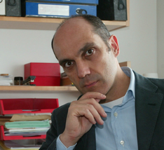

We are very pleased to announce that the keynote speaker this year will be
Enrico Motta from
the
Open University.
(
bio) (
abstract)

Bio
Prof. Enrico Motta is Professor in Knowledge Technologies and Former Director (2000 -2007) of the
Knowledge Media Institute (KMi) at the
Open University in UK. Prof. Motta has a Laurea in Computer Science from the
University of Pisa in Italy and a PhD in Artificial Intelligence from the Open University. Prof. Motta is
one of the leading scientists in the world in the new field of the semantic web, which can be seen as a large
scale web of data, able to support large scale machine interoperability, thus enabling novel intelligent
functionalities for locating and dynamically aggregating information on the web. Over the years, Prof. Motta
has obtained over £6M in research funding and has led KMi's contribution to numerous high-profile projects,
such as the highly prestigious, EPSRC-funded Interdisciplinary Research Collaboration on Advanced Knowledge
Technologies (AKT), as well as several EU-funded ones, most recently NeOn, X-Media, and Open Knowledge. Prof.
Motta is Editor in Chief of the International Journal of Human Computer Studies and is also on the editorial
board of IEEE Intelligent Systems and the Journal of Web Semantics. He founded the ground-breaking European
Summer School on Ontological Engineering and the Semantic Web, which is now in its fifth edition. He is the
author of 180 refereed publications. These include the book, Reusable Components for Knowledge Modelling,
which is published by IOS Press. Prof Motta also chaired the 14th International Conference on Knowledge Engineering
and Knowledge Management (EKAW 2004) and was the Programme Chair of the 4th International Semantic
Web Conference (ISWC 2005).
Abstract
Ontology-Based Applications in the Age of the Semantic Web
A large scale semantic web, characterized by thousands of ontologies and millions of RDF documents,
is rapidly becoming a reality. This huge semantic resource opens the way to a new generation of
intelligent applications, qualitatively different not only from traditional knowledge-based systems
but also from the ontology-driven applications built in the past decade. Specifically, in 'classic'
ontology-driven applications a centrally designed ontology is typically used to integrate vast amounts
of data, possibly acquired from a variety of sources. In contrast with these applications, the next
generation of semantic web applications will aggregate data in a much more dynamic fashion,
automatically identifying the semantic resources relevant to the current user need, doing away with the
single ontology assumption, and performing both ontology mapping and co-reference resolution on the fly.
Hence, in this scenario the emphasis shifts from developing a centrally designed, monolithic ontology
towards an automatic integration of ontology fragments, sourced from the semantic web. We use the term
faceted ontology to describe the resulting ontology, constructed by aggregating partial ontology structures
drawn from a variety of different ontologies on the semantic web. In this talk I will illustrate this vision
of a new generation of semantic web applications, and describe the work we are doing in this research context,
both at the infrastructure and at the application level. As far as the infrastructure is concerned, I will
present Watson, a novel gateway to the semantic web, which gathers the available semantic content on the Web,
analyzes it to extract useful metadata and indexes, and implements efficient query facilities to access the
data. Building on the infrastructure provided by Watson we are developing several new generation semantic
web applications, including new tools for query answering and for semantic browsing. Finally, I will also
discuss the implications of this new trend for ontology engineering environments and suggest some new
functionalities which these tools will have to provide, to support fully the development of faceted ontologies
or more in general the development of this new generation of semantic web applications.